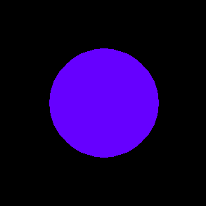

Le code JavaScript suivant permet d'ajouter une sphère à une scène stockée dans une variable scene :
See the Pen Untitled by OpenSpirit (@OpenSpirit) on CodePen.
Sur une page HTML, créez un canevas d'une largeur de 300 et d'une hauteur de 300. Importez ensuite la librairie three.js, puis créez les éléments suivants en amont du code permettant de créer la sphère :
Attention : par défaut, la sphère et la caméra sont toutes les deux créées aux coordonnées (0, 0, 0), donc la sphère est en dehors de la distance d'affichage. Reculez donc suffisamment la caméra pour que la sphère puisse être dessinée.
Une fois la sphère créée, demandez au renderer de dessiner l'image finale.
La scène, la caméra et le renderer doivent être créés avant le code permettant de créer la sphère. Attention, l'aspect ratio de la caméra doit se baser sur le canevas existant.
Le code doit se terminer par l'appel à la méthode render :
See the Pen Untitled by OpenSpirit (@OpenSpirit) on CodePen.
Le rendu final est le suivant :
